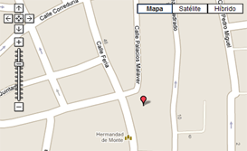

Tiempo hoy:
Posibles lluvias
Estación nº 675
CALLE CHURRUCA - Aprox. C/ Gonzáles Cuadrado
Donec nec justo eget felis facilisis fermentum. Aliquam porttitor mauris sit amet orci.
7
4
Si
Mapa

Cómo llegar a la Estación